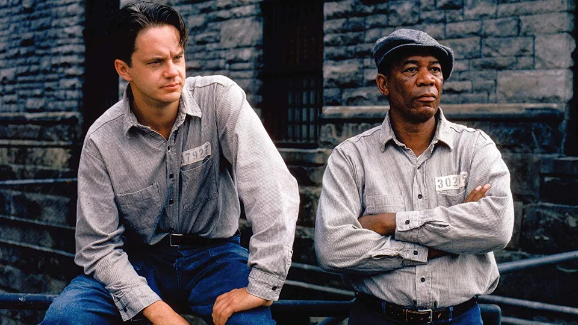
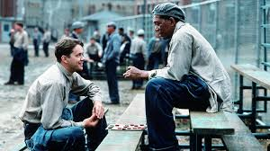
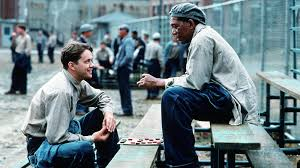

Побег из Шоушенка
Бухгалтер Энди Дюфрейн обвинён в убийстве собственной жены и её любовника. Оказавшись в тюрьме под названием Шоушенк, он сталкивается с жестокостью и беззаконием, царящими по обе стороны решётки. Каждый, кто попадает в эти стены, становится их рабом до конца жизни. Но Энди, обладающий живым умом и доброй душой, находит подход как к заключённым, так и к охранникам, добиваясь их особого к себе расположения.
 

Параметр |
Значение |
|---|---|
| Год | 1994 |
| Страна | USA |
| Жанр | Драма |
| Режиссер | Фрэнк Дарабонт |